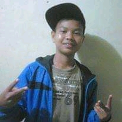
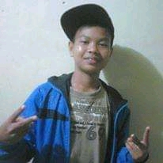

Tigana Reymansyah
TRS Studio adalah studio yang didirikan oleh Tigana Reymansyah dan berdiri pada tanggal 2 Mei 2002 yang berlokasi di Jln. Kolonel Bangun Siregar AMD Kalangan BTN Sito-tio Hilir. Secara umum, musik sangat dibutuhkan oleh manusia. Dikarenakan bisa membuat santai dan tenang disaat banyak masalah dan juga bisa menghilangkan stres difikiran. Pemilik studio ini menginginkan agar studio ini bisa dikenal lebih luas tetapi dengan biaya yang rendah. Pemilik studio ini terkadang mengalami kesulitan mendapatkan pelanggan dikarenakan lokasi studionya tidak berada ditengah-tengah kota. Sehingga perlu adanya strategi untuk meningkatkan penghasilan studio. Salah satunya adalah melalui internet dikarenakan mempunyai keuntungan diantaranya hemat waktu, hemat tenaga, dan hemat biaya. Dan dengan adanya aplikasi yang dibuat oleh si pemilik studio ini bisa mempermudah pelanggan agar bisa membooking langsung kapanpun dia ingin dan tidak menghabiskan energi untuk datang ke studio ini. Tujuan didirikannya studio ini adalah untuk mengasah kemampuan vokalnya seseorang dan terkhususnya orang Sumatra Utara (Medan) yang terkenal mempunyai suara khas yang rata-rata tinggi dan juga bertujuan untuk mencari bakat seseorang dalam bidang musik.